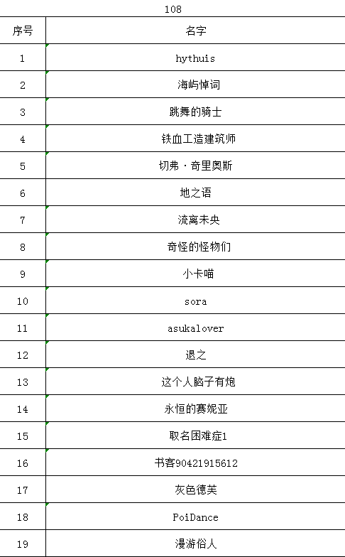
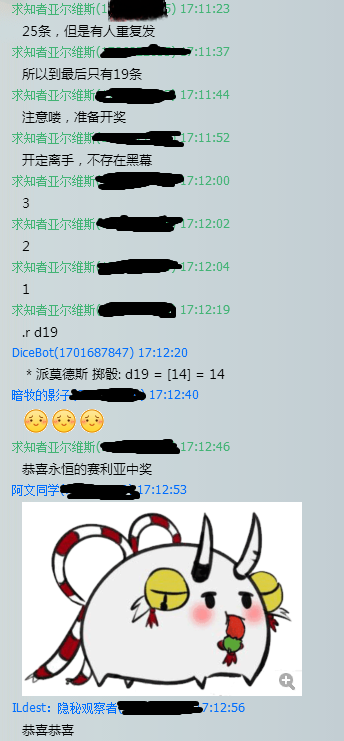
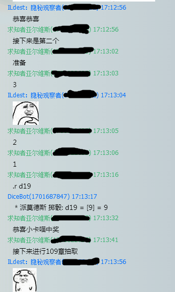
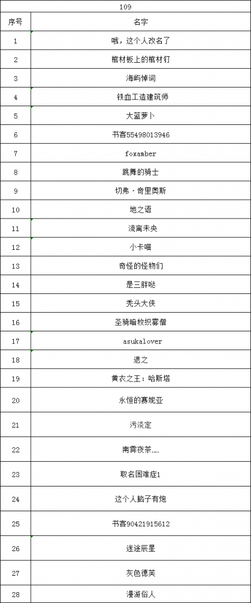
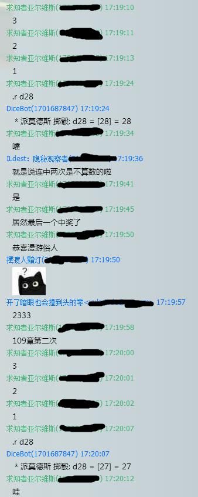
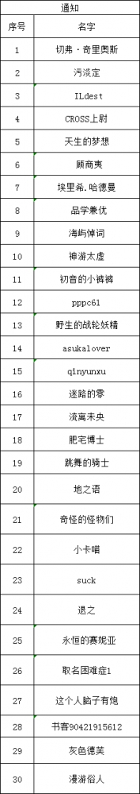
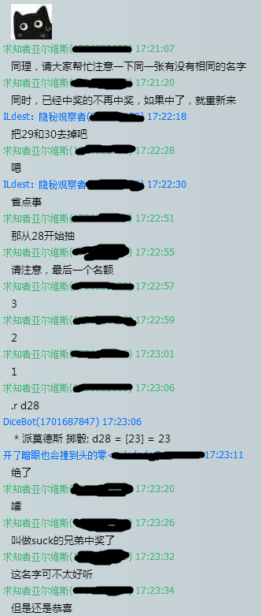

中奖名单

第一届空洞骑士奖品大赛落幕，获奖名单是：
第108章19名参赛选手中，第14名 永恒的赛妮亚，第9名 小卡喵
第109章28名参赛选手中，第27名 灰色德芙 ，第28名 漫游俗人 （我一度认为随机数生成中不可能扔到最前与最后的数字，而这一次抽奖就让我大开了眼界。不但第一次扔到了28，第二次紧跟着27？WTF？只能说发生了混沌偏转，恭喜这两个幸运观众）
通知章30名参赛选手中，第23名 suck（其中29，30是已经中奖的那两个B，就去掉了直接R28）
请以上获奖观众迅速与我私信联系，本次抽奖在荆棘树群友的围观下进行，买定离手，不存在黑幕，如果能发图片，截图与名单排序将在稍后放上。